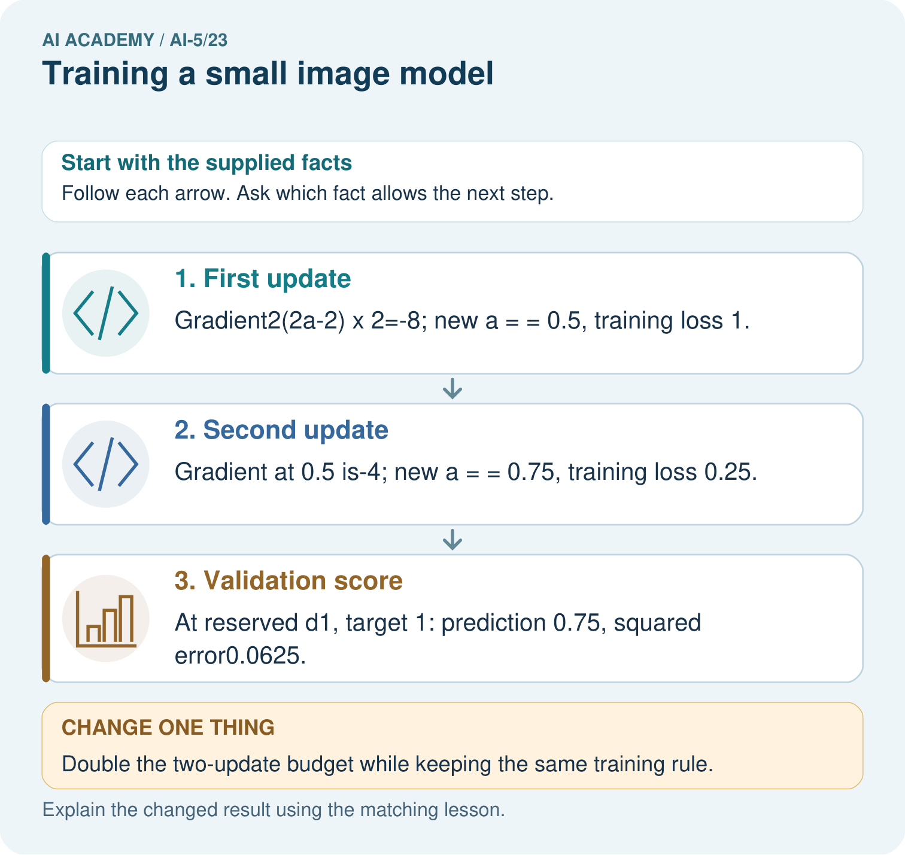

AI Academy · Level 5 · Grade 10 · Week 23 · Student lesson
Training a small image model
Learn to understand, design, build, test and explain AI systems responsibly.
Project: Image-pattern Network Investigation
Before you start
Why could pooling all four pixels of a 2 by 2 image hide whether the bright pixels are on the left or right?
Plan time to read, investigate and explain. Keep predictions separate from observations.
Student lesson · 1 of 17
Your mission
Your learning target
I can trace a complete image model with fixed features and one trained weight.
I can select a checkpoint using a declared validation rule.
I can evaluate a frozen model against a baseline and limit the conclusion.
Remember before reading
Close your notes first. A rough first answer helps us choose the right starting point; it is not a score for your ability.
Without opening the old lesson, explain one key idea from Pooling and spatial information. Give an example and a mistake that the idea helps you avoid.
Without opening the old lesson, explain one key idea from Image tensors and channels. Give an example and a mistake that the idea helps you avoid.
Without opening the old lesson, explain one key idea from Initialisation and reproducibility. Give an example and a mistake that the idea helps you avoid.
After trying, check the relevant lesson or ask your teacher. Change the part of your explanation that the evidence shows was wrong.
This week you will practise:
Trace a complete image model with fixed features and one trained weight
Select a checkpoint using a declared validation rule
Evaluate a frozen model against a baseline and limit the conclusion
Retrieve what you already know
Why could pooling all four pixels of a 2 by 2 image hide whether the bright pixels are on the left or right?
This week’s end goal
By the end, I can explain training a small image model using a traced example and a stated limitation.
Student lesson · 2 of 17
Notice the evidence
Use fictional 2 by 2 binary images, stored as two rows. Predict class 1 when the left column sum exceeds the right column sum; otherwise predict class 0. Equal sums belong to class 0. This known arithmetic task makes every step checkable; it does not establish real-world image recognition.
| Split and ID | Image rows | Class | Difference d |
|---|---|---|---|
| Train A | [1, 0] and [0, 0] | 1 | 1 |
| Train B | [1, 0] and [1, 0] | 1 | 2 |
| Train C | [0, 1] and [0, 0] | 0 | -1 |
| Train D | [0, 1] and [0, 1] | 0 | -2 |
| Validation E | [0, 0] and [1, 0] | 1 | 1 |
| Validation F | [0, 0] and [0, 1] | 0 | -1 |
Apply the fixed kernel [[1, -1], [1, -1]] to the entire image to obtain d. Its negative gives -d. ReLU produces h1 = max(0, d) and h2 = max(0, -d). The output score is a(h1 - h2) = ad. Only the shared scalar a is trained; both kernels stay frozen and there is no bias or pooling.
For squared-error training, map class 1 to target t = 1 and class 0 to t = -1. Predict class 1 only when score > 0; otherwise class 0. The score is not a probability. Keep the teacher-held final cases unseen until the checkpoint is selected and recorded.
Student lesson · 3 of 17
See how it works
Start a = 0. Use all four training examples in each update, ordinary mean squared error and learning rate 0.1. Save checkpoints at updates 0, 1 and 2. The training loss is 2.5a squared - 3a + 1, with gradient 5a - 3. Subtract learning rate times gradient; this gives a = 0.3 then a = 0.45.
def feature(image):
return image[0][0] + image[1][0] - image[0][1] - image[1][1]
train = [([[1, 0], [0, 0]], 1),
([[1, 0], [1, 0]], 1),
([[0, 1], [0, 0]], -1),
([[0, 1], [0, 1]], -1)]
valid = [([[0, 0], [1, 0]], 1),
([[0, 0], [0, 1]], -1)]
def mse(a, rows):
return sum((a * feature(x) - t)**2 for x, t in rows) / len(rows)
a, checkpoints = 0.0, [0.0]
for _ in range(2):
gradient = sum(2 * (a * feature(x) - t) * feature(x)
for x, t in train) / len(train)
a -= 0.1 * gradient
checkpoints.append(a)
for step, value in enumerate(checkpoints):
print(step, round(value, 6), round(mse(value, train), 6),
round(mse(value, valid), 6))The code assumes valid 2 by 2 numeric images and nonempty labelled lists. It prints update, weight, training MSE and validation MSE. Validation examples are scored but never used in the gradient. A single-channel filter spanning the whole image produces one value here, so no further spatial pooling is needed.
Connect the picture and the explanation
Point to the input, the deciding step and the result in this week’s visual. Explain the same step in ordinary words. A picture helps when you can say what each part represents.
Student lesson · 4 of 17
Compare the cases
Compare a familiar case with a changed case
Starting at a = 0, use gradient 5a - 3 and rate 0.1 for two updates. Give each gradient, new weight and training MSE.
Change one thing in the pictured case
Change: Double the two-update budget while keeping the same training rule.
Prediction: Next a values 0.875 and 0.9375; training loss falls to 0.015625.
Reason: Each update halves the distance to the training optimum1 in this toy system.
Student lesson · 5 of 17
Words that unlock the idea
| Word | Meaning |
|---|---|
| Frozen feature | A feature computation whose parameters are kept unchanged during training |
| Checkpoint | Saved model parameters at a particular training stage |
| Selection metric | The quantity used under a declared rule to choose a model |
| Baseline | A simple comparison method evaluated on the same cases |
Student lesson · 6 of 17
Follow a worked example
Compare the saved checkpoints
Learn from the worked case
Cover the result before checking it. Say what is given, choose the procedure, and follow one step at a time. Then uncover the result and explain your first mismatch. Ask why a step is allowed, not only what number it produces.
A pictorial worked case: Training a small image model
Train one tiny image score with a fixed budget and a separately reserved check.
The facts we will use
Toy brightness difference d=left−right; score=a×d. Training pair d=2, target 2; start a=0; squared loss; learning rate 1/16; two updates.
All inputs and outcomes in this worked example are invented classroom data; no real model run is claimed.

Read the picture one step at a time
Why this result follows
The image feature is a brightness difference, and training adjusts one output weight multiplying it. Each gradient is computed using the current prediction before the next update. In this example, the rate halves the distance to the training optimum each time. More updates reduce this training loss, but choosing a budget still requires separate validation evidence.
What this example does not establish
This scalar brightness model is a transparent toy image task, not a claim that a full image network was run.
Read the labelled picture: Does lower training loss alone establish that four updates generalise better? Point to the relevant step in the picture, then write the changed result and the rule or evidence that supports it.
Change one thing: Double the two-update budget while keeping the same training rule. Predict the result before checking the explanation. What remains the same?
Student lesson · 7 of 17
Find and repair a mistake
Save a = 0.45, both fixed kernels, the input schema, target mapping, strict decision threshold, split IDs, learning rate, update budget and selection rule. The baseline always predicts class 0: training classes are tied, and the declared tie rule chooses 0. It gets 2 of 4 training cases and 1 of 2 validation cases correct. The selected model gets all of those cases correct.
The teacher now supplies the three reserved final images. Record each score and prediction before comparing with the supplied labels. Report correct count and denominator for both the frozen model and the same constant baseline. Do not tune the threshold or retrain after viewing final errors and still call that same set unseen.
Because the images and target rule were constructed for this small exercise, even perfect results support only a narrow claim. Validation images differ from training pixels but reuse differences 1 and -1. This is a deliberately simple check of a procedure, not evidence of broad generalisation.
Locate the earliest unsupported step
Select among the three saved lesson checkpoints using validation MSE, with earliest update breaking a tie. Is selecting by training accuracy the same declared procedure?
Student lesson · 8 of 17
Practise together
For Train B, compute d, h1, h2 and the score at a = 0.45. Give the class prediction and squared error against its signed target.
Practise with less help: Check both updates
Use workbook W2 for the connected example “Training a small image model”. First fill the input and rule boxes. Try the middle steps before asking for a hint. After a hint, try the next step yourself.
| Plan | Do | Check |
|---|---|---|
| What is given? Which rule or procedure applies? | Record each intermediate step. | Does the result follow? What remains unknown? |
Explain your trace to a partner. Your partner points to one step to check. Swap roles on the next case. Each person writes their own explanation.
Check your reasoning
Use the worked case for Training a small image model. Proposed explanation: “All parameters in a trained model must have been learned”. Decide whether this explanation is supported. Point to the step or supplied fact that decides; explain your repair if needed.
Answer on your own before discussion. If you are unsure, say which step you need help with.
Explain the picture
Does lower training loss alone establish that four updates generalise better? Point to the relevant step in the picture, then write the changed result and the rule or evidence that supports it.
This is supported practice. Keep the separately named independent case for an attempt before feedback.
Student lesson · 9 of 17
Run the investigation
Predict, investigate and preserve the evidence
Starting at a = 0, use gradient 5a - 3 and rate 0.1 for two updates. Give each gradient, new weight and training MSE.
def feature(image):
return image[0][0] + image[1][0] - image[0][1] - image[1][1]
train = [([[1, 0], [0, 0]], 1),
([[1, 0], [1, 0]], 1),
([[0, 1], [0, 0]], -1),
([[0, 1], [0, 1]], -1)]
valid = [([[0, 0], [1, 0]], 1),
([[0, 0], [0, 1]], -1)]
def mse(a, rows):
return sum((a * feature(x) - t)**2 for x, t in rows) / len(rows)
a, checkpoints = 0.0, [0.0]
for _ in range(2):
gradient = sum(2 * (a * feature(x) - t) * feature(x)
for x, t in train) / len(train)
a -= 0.1 * gradient
checkpoints.append(a)
for step, value in enumerate(checkpoints):
print(step, round(value, 6), round(mse(value, train), 6),
round(mse(value, valid), 6))| Record | Your evidence |
|---|---|
| Given input and fixed rule | |
| Prediction before checking | |
| Actual result, or “not run” | |
| First mismatch and one explanation | |
| Boundary or missing input and expected response |
On paper, trace the supplied procedure. If code is provided, predict before running it in a local practice file. Never write an expected answer as though it were an observed run.
Plan → try → check
Before trying: what do I expect, and why? While trying: which step could first go wrong? Afterwards: what did I actually observe, and what should change? Keep “not run” if you only traced the procedure.
Student lesson · 10 of 17
Build your understanding
Explain → apply → challenge
For Train B, compute d, h1, h2 and the score at a = 0.45. Give the class prediction and squared error against its signed target.
Select among the three saved lesson checkpoints using validation MSE, with earliest update breaking a tie. Is selecting by training accuracy the same declared procedure?
After inspecting the final cases, a team changes the decision threshold and reports the best result as an unseen test score. Explain the problem and list two things the original report should preserve.
Student lesson · 11 of 17
Connect your project
Add a labelled training a small image model evidence sheet to Image-pattern Network Investigation. Show how you can trace a complete image model with fixed features and one trained weight. Use the supplied fictional case and keep its inputs, intermediate steps, calculation or prediction, and limitation. Connect this record to last week’s record; a matching answer without a trace is insufficient.
| Project evidence | Record |
|---|---|
| Component and version | |
| Inputs permitted at prediction time | |
| Trace and comparison with earlier work | |
| Failure, limit and human review |
Evidence for your project
For your Image-pattern Network Investigation, save the input, procedure, observed result and limitation of this check. Label this worked example as practice; use a different, previously unreviewed case when checking independent understanding.
Student lesson · 12 of 17
Show what you know
Training adjusted one weight in a model with hand-chosen features. It did not discover the left-versus-right kernel. The arithmetic rule itself would solve the declared task exactly; the trained model helps us study fitting and evaluation, not demonstrate that learning is necessary here.
Report the fixed and trained components separately, selected checkpoint, per-case final predictions, baseline results and limitations. If a final case fails, preserve that failure and design a new experiment with new reserved evaluation data. Next week examines augmentation and leakage between related images.
After inspecting the final cases, a team changes the decision threshold and reports the best result as an unseen test score. Explain the problem and list two things the original report should preserve.
Student lesson · 13 of 17
Study a complete case
Complete evidence record
Compare the saved checkpoints
Follow the input through the stated procedure to its result. Cover the result first, predict it, then explain every intermediate step. The text/table accompanies the figure so the example can be read without colour.
Student lesson · 14 of 17
Try a new case independently
Independent case: Choose a checkpoint independently
A separate model scores bd. Its training examples have d = 1 and -1 with signed targets 1 and -1. Start b = 0; gradient is 2(b - 1), rate 0.25 and budget two updates. Validation differences are 2 and -2 with targets 1 and -1. Calculate all three weights and their validation MSEs, then select by lowest validation MSE.
Attempt this case before feedback. Record any help. Earlier examples below are further practice; a case already practised with feedback cannot establish fresh transfer.
Attempt this without hints
A separate model scores bd. Its training examples have d = 1 and -1 with signed targets 1 and -1. Start b = 0; gradient is 2(b - 1), rate 0.25 and budget two updates. Validation differences are 2 and -2 with targets 1 and -1. Calculate all three weights and their validation MSEs, then select by lowest validation MSE.
Record support used: none, hint or teacher explanation. After feedback, a different case is needed to demonstrate independence.
Use feedback to improve
Attempt the independent case before hints. Record whether you worked alone, used a hint or followed a model. After feedback, fix the first unsupported step and explain why it changed. A later check uses a changed case, not a copied answer.
Student lesson · 15 of 17
Your lesson route
Start with this question: Train one tiny image score with a fixed budget and a separately reserved check.
| By the end, I can | How I will show it |
|---|---|
| Trace a complete image model with fixed features and one trained weight | Explain the deciding step, show a trace or test, and state one limit. |
| Select a checkpoint using a declared validation rule | Explain the deciding step, show a trace or test, and state one limit. |
| Evaluate a frozen model against a baseline and limit the conclusion | Explain the deciding step, show a trace or test, and state one limit. |
Remember → watch and explain → try with help → investigate → try independently → keep project evidence. Your teacher may spread this lesson across several classes.
Keep your first prediction. Compare it with what the evidence shows and explain any change.
Student lesson · 16 of 17
Finish and return
Close your notes. Explain this goal in your own words: Trace a complete image model with fixed features and one trained weight
If you are unsure, return to the worked picture and explain one arrow. If you are ready, change an input or assumption and justify your prediction.
Save your workbook evidence. At the next review, try a different case before opening your old answer.
Student lesson · 17 of 17
Supported practice, repair and portfolio
Use this supported practice once, in the browser or on paper. Keep the reserved independent assessment for a separate first attempt before teacher feedback.
Train one tiny image score with a fixed budget and a separately reserved check.
Practice 1: explain the deciding evidence
Which labelled step matches this detail? At reserved d1, target 1: prediction 0.75, squared error0.0625.
1. Validation score
2. First update
3. Second update
Hint if needed: Read the steps in the pictorial case. Match the supplied detail to the stage that performs or records it.
After your attempt, compare with the supported explanation: Validation score At reserved d1, target 1: prediction 0.75, squared error0.0625. The image feature is a brightness difference, and training adjusts one output weight multiplying it. Each gradient is computed using the current prediction before the next update. In this example, the rate halves the distance to the training optimum each time. More updates reduce this training loss, but choosing a budget still requires separate validation evidence.
Practice 2: explain the deciding evidence
Changed-case practice: Double the two-update budget while keeping the same training rule. Which conclusion is supported by the supplied facts?
1. We can decide the result without examining the changed input or the procedure.
2. This one example guarantees correct results for every future input.
3. Next a values 0.875 and 0.9375; training loss falls to 0.015625.
Hint if needed: Use the changed condition and the deciding step in the pictorial trace. The answer must say what follows from those facts.
After your attempt, compare with the supported explanation: Next a values 0.875 and 0.9375; training loss falls to 0.015625. Each update halves the distance to the training optimum1 in this toy system.
Repair a missing building block
Review Pooling and spatial information (ai-5/22). Goal: Compute max and mean pooling under an explicit window rule. Short practice: Can the max map reveal where the 4 originally appeared? Point to the relevant step in the picture, then write the changed result and the rule or evidence that supports it.. Return to this week and explain what you changed.
Review Image tensors and channels (ai-5/20). Goal: Read a pixel using declared row column and channel axes. Short practice: Where is the bottom green pixel in the first batched image? Point to the relevant step in the picture, then write the changed result and the rule or evidence that supports it.. Return to this week and explain what you changed.
Review Initialisation and reproducibility (ai-5/17). Goal: Trace how starting values affect a fixed training budget. Short practice: Does the matching final loss mean the parameter values are equal? Point to the relevant step in the picture, then write the changed result and the rule or evidence that supports it.. Return to this week and explain what you changed.
Predict, run and debug
The browser lab lets you edit the supported Python examples already included in this lesson. Predict first, run, inspect the actual output or error, change one input, then run again. Keep code, predictions, actual results and a reasoned revision together. On paper, label your result as a trace rather than an execution.
Keep your completed work
Use Download completed work in the hosted lesson to export your answers, reflections, practice feedback and code-run evidence. Open the HTML copy to read or print it. Drafts stay in this browser when storage is available; clear drafts on a shared device.